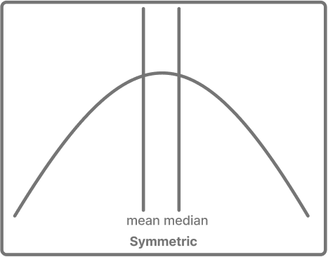
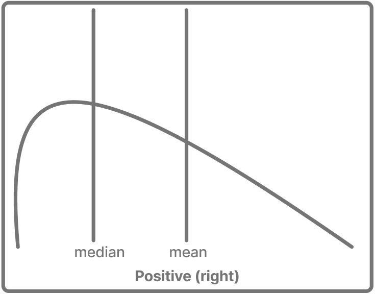
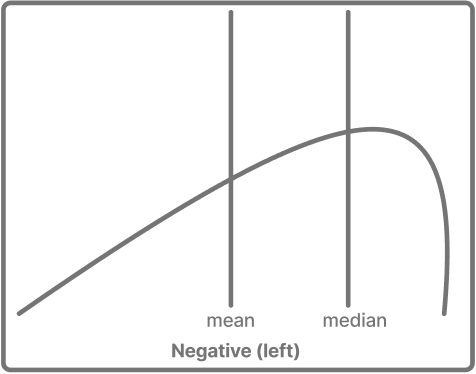
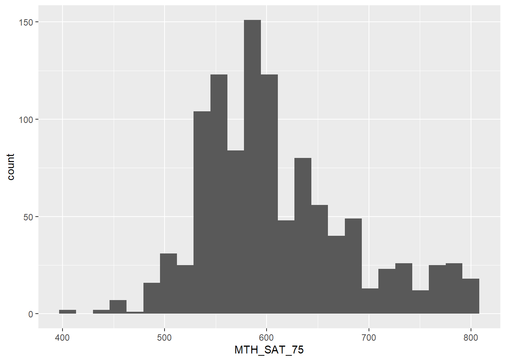
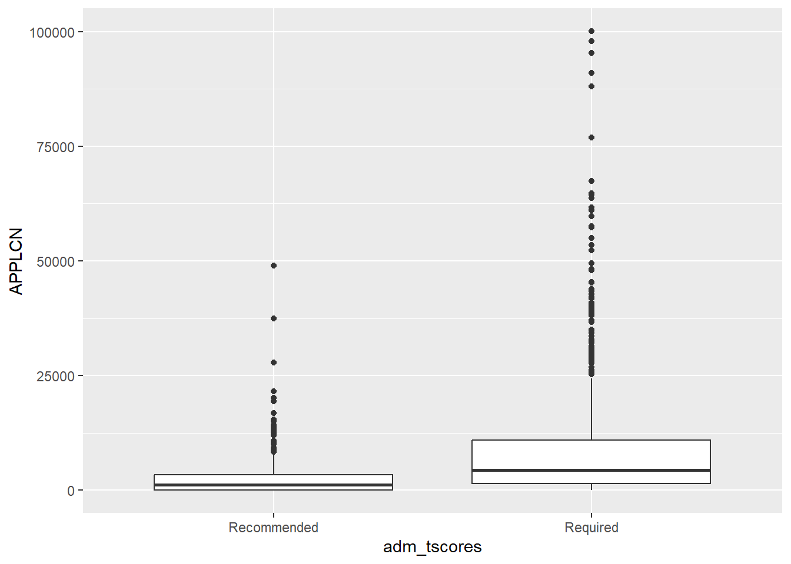
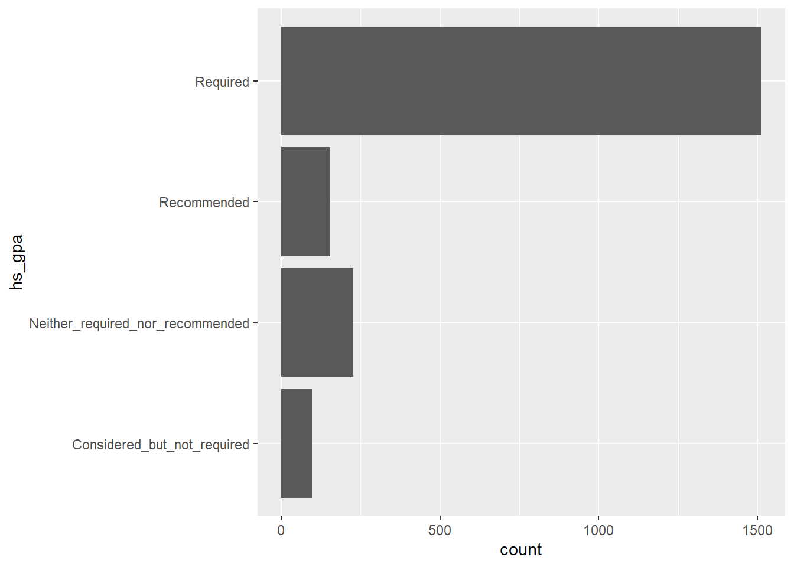
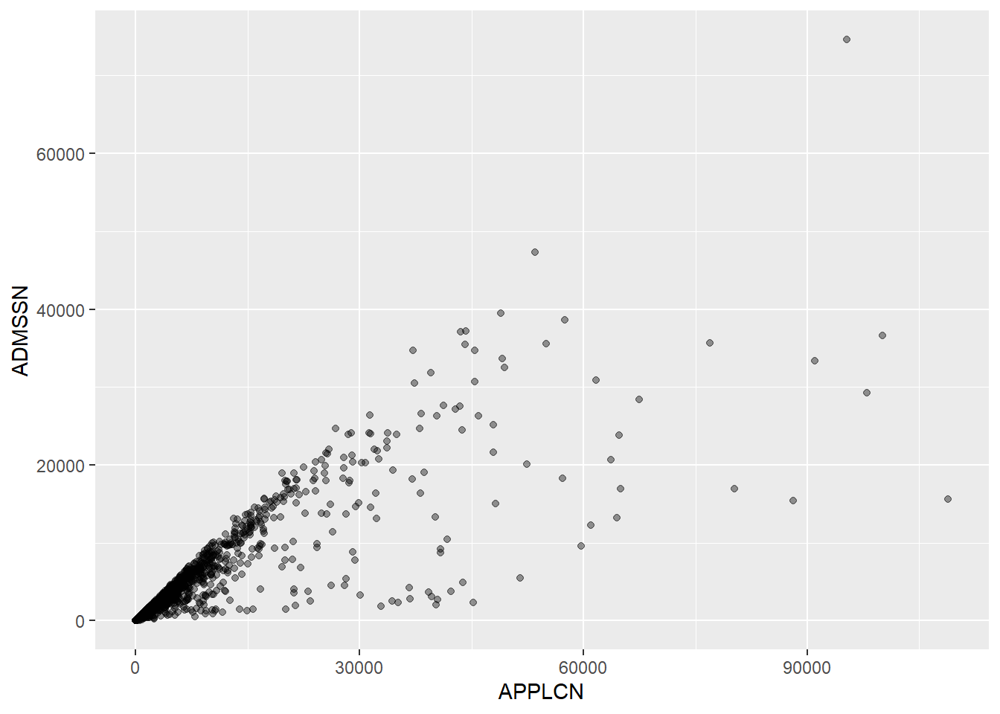
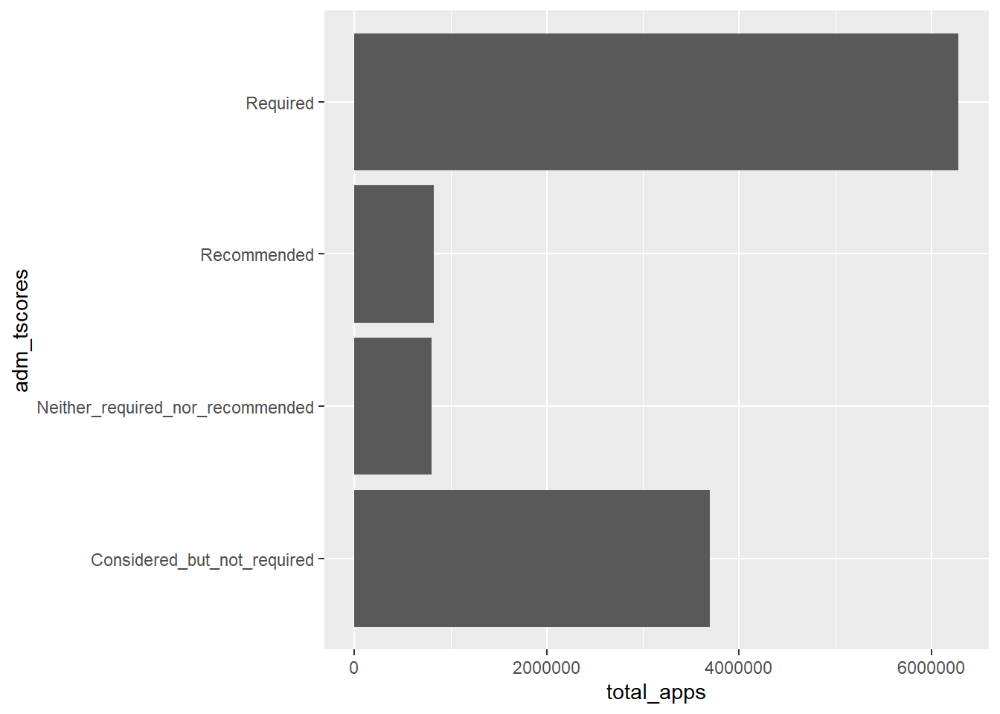
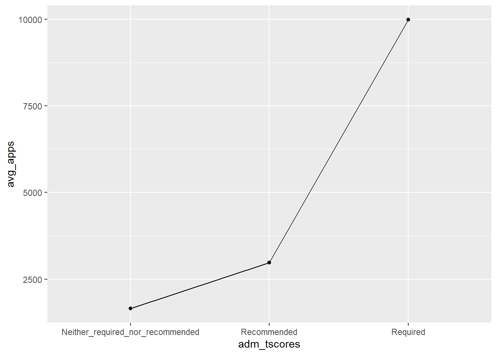

library(tidyverse)
library(IPEDS)
# Show plain numbers instead of scientific notation (e.g., 2000000 not 2e+06)
options(scipen = 999)
# Real admissions data from the IPEDS package. It has one row per institution, with
# application and admission counts, and SAT/ACT score ranges.
admissions <- adm2020
glimpse(admissions)
#> Rows: 1,989
#> Columns: 39
#> $ INSTITUTION_ID <int> 100654, 100663, 100706, 100724, 100751, 100830, 100858,…
#> $ hs_gpa <chr> "Required", "Required", "Required", "Required", "Requir…
#> $ hs_rank <chr> "Recommended", "Neither_required_nor_recommended", "Rec…
#> $ hs_record <chr> "Required", "Required", "Required", "Recommended", "Req…
#> $ cprep_program <chr> "Recommended", "Required", "Neither_required_nor_recomm…
#> $ recs <chr> "Neither_required_nor_recommended", "Neither_required_n…
#> $ competencies <chr> "Recommended", "Neither_required_nor_recommended", "Rec…
#> $ adm_tscores <chr> "Required", "Required", "Required", "Required", "Requir…
#> $ test_eng_FL <chr> "Required", "Neither_required_nor_recommended", "Requir…
#> $ other_test <chr> "Neither_required_nor_recommended", "Neither_required_n…
#> $ APPLCN <int> 9855, 10391, 5793, 7027, 39560, 4606, 17946, 2460, 1572…
#> $ APPLCNM <int> 3394, 3803, 3057, 2226, 14907, 1553, 7878, 1069, 743, 7…
#> $ APPLCNW <int> 6461, 6588, 2736, 4763, 24653, 3053, 10068, 1391, 828, …
#> $ ADMSSN <int> 8835, 8375, 4467, 6948, 31804, 4401, 15266, 1487, 1191,…
#> $ ADMSSNM <int> 2947, 3002, 2509, 2188, 12112, 1473, 6731, 684, 600, 65…
#> $ ADMSSNW <int> 5888, 5373, 1958, 4724, 19692, 2928, 8535, 803, 591, 97…
#> $ ENRLT <int> 1664, 2154, 1345, 975, 6507, 674, 4914, 256, 288, 102, …
#> $ ENRLM <int> 676, 765, 847, 347, 2752, 223, 2377, 132, 169, 41, 126,…
#> $ ENRLW <int> 988, 1389, 498, 628, 3755, 451, 2537, 124, 119, 61, 94,…
#> $ FT_enroll <int> 1622, 2102, 1328, 926, 6466, 641, 4869, 256, 277, 16, 2…
#> $ FT_enroll_M <int> 660, 738, 840, 322, 2728, 203, 2352, 132, 164, 3, 126, …
#> $ FT_enroll_W <int> 962, 1364, 488, 604, 3738, 438, 2517, 124, 113, 13, 94,…
#> $ PT_enroll <int> 42, 52, 17, 49, 41, 33, 45, NA, 11, 86, 0, 0, 23, 0, 8,…
#> $ PT_enroll_M <int> 16, 27, 7, 25, 24, 20, 25, NA, 5, 38, 0, 0, 8, NA, 3, N…
#> $ PT_enroll_W <int> 26, 25, 10, 24, 17, 13, 20, NA, 6, 48, 0, NA, 15, 0, 5,…
#> $ SAT_num <int> 22, 302, 90, 293, 1492, 35, 841, 37, 27, NA, 38, 0, 7, …
#> $ SAT_pct <int> 1, 14, 7, 30, 23, 5, 17, 14, 9, NA, 17, 0, 1, 7, 0, 43,…
#> $ ACT_num <int> 1202, 2120, 1248, 688, 4986, 561, 4062, 196, 225, NA, 2…
#> $ ACT_pct <int> 72, 98, 93, 71, 77, 83, 83, 77, 78, NA, 91, 50, 89, 96,…
#> $ RW_SAT_25 <int> 430, 560, 590, 438, 540, 480, 590, 520, 515, NA, 503, N…
#> $ RW_SAT_75 <int> 520, 668, 700, 531, 660, 575, 650, 610, 590, NA, 590, N…
#> $ MTH_SAT_25 <int> 410, 530, 580, 406, 530, 430, 570, 500, 505, NA, 500, N…
#> $ MTH_SAT_75 <int> 500, 660, 730, 518, 670, 515, 670, 580, 585, NA, 568, N…
#> $ ACT_25 <int> 15, 22, 24, 14, 23, 18, 25, 22, 18, NA, 19, NA, 18, 18,…
#> $ ACT_75 <int> 20, 30, 31, 20, 31, 23, 31, 28, 23, NA, 24, NA, 24, 23,…
#> $ eng_ACT_25 <int> 14, 22, 24, 14, 23, 17, 24, 22, 17, NA, 19, NA, 16, 16,…
#> $ eng_ACT_75 <int> 20, 33, 33, 20, 33, 24, 33, 30, 24, NA, 25, NA, 23, 23,…
#> $ MTH_ACT_25 <int> 15, 20, 23, 14, 21, 16, 23, 20, 16, NA, 17, NA, 17, 15,…
#> $ MTH_ACT_75 <int> 18, 27, 29, 20, 29, 22, 29, 27, 22, NA, 24, NA, 25, 24,…6 Exploratory Data Analysis
6.1 Details
This module is about exploratory data analysis (EDA), which is the practice of examining data to learn what it contains and what questions it raises, before any formal modeling begins. Good EDA is where a data professional uses intuition and methodical inspection to spot surprises and decide what is worth investigating further. Once data are tidy, the same dplyr tools we used to clean data in the last module can also help us understand it. We will also pick up a couple of helpful preprocessing steps along the way.
6.2 Very brief stats
EDA leans on a handful of basic statistical ideas. A quick review is presented here that is enough to follow the chapter.
6.2.1 Measures of central tendency
A measure of central tendency describes the “typical” value in a set of numbers. These three are common:
- The mean is the average where values are added together and divided by their count. It is a common stat, but it is sensitive to outliers with extreme values.
- The median is the middle value when the numbers are sorted. Half fall below it and half above. Because it ignores how far away the extremes are, it is less sensitive to them.
- The mode is the value that appears most often. It works for categorical and numeric data.
6.2.2 Measures of spread
Central tendency refers to the middle of some values. Spread tells us how far the values scatter around it.
- The range is the distance from the smallest value to the largest. Simple, but driven entirely by the two extremes.
- The interquartile range (IQR) is the range of the middle half of the data. That is, the distance from the 25th to the 75th percentile. It describes the bulk of the values while ignoring the extremes.
- The standard deviation (SD) measures the typical distance of values from the mean. A small SD means values cluster tightly around the average. A large one means they are widely dispersed.
6.2.3 Distribution, shape, and skew
Skew describes how lopsided the shape of a distribution is. Comparing the mean to the median surfaces the shape. A useful framing for understanding a distribution is that the mean chases the tail, being pulled toward the extreme values. The median is more resistant, so it sits near the middle. Whenever the mean and median drift apart, the direction of the gap tells you which way the data is skewed.
In a symmetric distribution, the values are balanced around the center and the mean and median sit close together. Example: In a well designed course, most students score roughly near the class average, with some scoring below or above this.

A distribution has a positive (right) skew when a few large values stretch a long tail to the right. These high values pull the mean higher, so the mean sits above the median. Example: In a difficult course, most students score low, with a few high scorers stretching a tail to the right and pulling the mean above the median.

A distribution has negative (left) skew when a long tail stretches to the left. These low values pull the mean down, so the mean sits below the median. Example: In an easy course, most students score high, with a few low scorers stretching a tail to the left and pulling the mean below the median.

6.3 Two modes of EDA
EDA works through two complementary modes of working and it can be helpful to move between them often.
The first mode works with values, such as summaries, counts, and statistics. We might compute the average GPA by major, count how many students fall into each class standing, or find the highest and lowest values. Values are precise and let us compare and understand exactly.
The second mode works with visual elements. This could include plots that show skewness, histograms that the distribution of a variable, or a box plot that exposes outliers. Pictures can reveal patterns and data issues that a table of values can hide.
These modes work in tandem and are supportive of one another. Imagine we compute the average number of credits per major and notice one major’s average looks oddly low. The number raises a question but doesn’t answer it. So we plot that program’s credits and see the distribution splits in two — a cluster of part-time students pulling the average down. The plot raises a new question, so we go back to the numbers to count how many are part-time.
6.4 How visualization works with ggplot2
When we move to the visual mode, we build plots with ggplot2, a tidyverse package for making graphs. It works by layering a few simple pieces, and once you know them, most plots follow the same pattern. We keep visuals simple in this module and go deeper into ggplot2 later. The ggplot2 documentation is found here https://ggplot2.tidyverse.org/.
6.4.1 Basic ggplot syntax
ggplot(data, aes(x = ..., y = ...)) + # start with the data and map variables to the plot
geom_type() # add a geom for the shape you want to draw- Data is where every plot starts and is passed to create visuals.
- Aesthetics map columns of your data to visual properties, such as which variable goes on the x-axis, which on the y-axis, or which controls color.
-
Geoms draw the plot
geom_histogram()draws a histogram, for example. - Stats are the stats that are computed when drawing a plot with the geom. A histogram bins values into ranges and counts them, for example.
-
Layers are added with the
+symbol, stacking pieces onto the plot. You begin with the data and aesthetics, add a geom, then perhaps labels or a theme — each+adds another layer.
Put together, a plot reads almost like a sentence: take this data, map these variables to the axes, and draw them as this shape. A few common plot types seen in EDA are:
| Plot | Geom | Used for |
|---|---|---|
| Histogram | geom_histogram() |
Seeing the shape of a numeric variable. |
| Box plot | geom_boxplot() |
Identifying spread and outliers in a numeric variable. |
| Bar chart |
geom_bar() / geom_col()
|
Viewing counts or comparisons across categories |
| Scatter plot | geom_point() |
Showing the relationship between two numeric variables |
| Line chart | geom_line() |
A trend over an ordered variable, such as time. |
6.4.2 Basic visualizations with ggplot2 examples
First we create import IPEDS data to use for the visuals.
6.4.2.1 Histogram
A histogram shows the shape of one numeric variable by binning its values and counting each bin. Here we look at the 75th-percentile SAT math score across institutions. The aes() function— short for aesthetics—maps a column of your data to a part of the plot. In aes(x = MTH_SAT_75), we map the SAT math score to the x-axis.
ggplot(admissions, aes(x = MTH_SAT_75)) + # map the SAT math score to the x-axis
geom_histogram(bins = 25) # bars count institutions in each score range
The x-axis is the score. The y-axis is how many institutions fall in each range. Test scores cluster around a center and tail off on both sides showing a roughly symmetric bell shape.
6.4.2.2 Box plot
A box plot shows spread and outliers. It can be helpful for comparing groups. Here we compare the number of applications an institution receives at schools that require an admissions test versus those that only recommend one. We use dplyr’s filter to remove the other categories. %in% is a membership check. It says remove every observation that isn’t one of these.

Each box summarizes one group’s applications. The box itself are the middle values. The line is the median. Dots are outliers. Comparing the two shows whether test-requiring institutions receive more applications than those that only recommend a test.
6.4.2.3 Bar chart
A bar chart compares counts across categories. Here we count how many institutions fall into each high-school-GPA admission policy.
ggplot(admissions, aes(x = hs_gpa)) + # the policy category on the x-axis
geom_bar() + # one bar per category, height = number of institutions
coord_flip() # flip sideways so long labels fit
Each bar is a policy (“Required,” “Recommended,” etc.). Its height is how many institutions use the policy. Bars make the most and least common policies easy to spot.
6.4.2.4 Scatter plot
A scatter plot shows the relationship between two numeric variables, one per axis. Here we compare applications received against students admitted.
ggplot(admissions, aes(x = APPLCN, y = ADMSSN)) + # applications on x, admissions on y
geom_point(alpha = 0.4) # one point per institution
Each point is an institution, placed by its applications (x) and admissions (y). The compact upward grouping shows a strong relationship, where institutions with more applications also admit more students. alpha = 0.4 makes points semi-transparent so crowded areas stay readable.
6.4.3 Column chart
A column chart draws bars at heights you supply, rather than counting rows. Here we use some additional dplyr verbs (group_by and summarize) to total applications received by admission-test policy, removing any rows with missing values. This is different from the bar chart where we are calculating the stat

Unlike the bar chart, which counted institutions, here each bar’s height is the sum of applications in that group, which we calculated first with group_by() and summarize(). That is the core difference between geom_bar() and geom_col().
6.4.4 Line chart
A line chart connects points across an ordered x-axis. Test-score policies have a natural order from strict to most lenient. Required, then Recommended, then Neither. We can trace the average number of applications across these ordered levels.
admissions |>
filter(adm_tscores %in% c("Required", "Recommended",
"Neither_required_nor_recommended")) |>
group_by(adm_tscores) |>
summarize(avg_apps = mean(APPLCN, na.rm = TRUE)) |>
# policy on x, avg applications on y
ggplot(aes(x = adm_tscores, y = avg_apps, group = 1)) +
geom_line() +
geom_point() # mark each policy level
Each point is one policy level, ordered from strictest to most lenient, and the line connects them to show how average applications change across the levels. A line makes sense here because the categories have a real order.
6.5 Guided Lab: Exploratory data analysis
#________________________________________________________
# Title: Exploratory Data Analysis
# Purpose: Clean, reshape, and explore a small student dataset
#________________________________________________________
#________________________________________________________
# **Setup**
# We use the tidyverse (which includes dplyr, tidyr, and ggplot2) throughout.
library(tidyverse)
library(skimr)
#________________________________________________________
# **Load the student data**
# We read the dataset straight from the resource's GitHub repository -- no
# download needed. read_csv() accepts a web address just as it accepts a file
# path. It is a small, made-up dataset of 50 students with a few deliberate
# problems and patterns to discover.
students <- read_csv("https://raw.githubusercontent.com/mlittrell-ttu/data-science-higher-ed/main/data/chp_6_student.csv")
#glimpse() shows us the structure and data types
glimpse(students)
#________________________________________________________
# **First look: what's in here and what's off?**
# glimpse() gave us the structure. Now we scan for issues. summary() reports
# the min, max, mean, and quartiles of each numeric column, which is a fast way
# to spot values that shouldn't exist.
summary(students)
# Two things look wrong. gpa has a maximum of 5.20, but GPA we know for our
# context, it should max out at 4.0.
# And hours_studied has a negative minimum, which is from our contextual knowledge
# we know that negative hours would not be recorded.
# Possibly these are data-entry errors to fix.
#________________________________________________________
# **See the problems, don't just read them**
# The summary tells us something is off, but a picture makes it obvious. A box
# plot draws the middle half of the data as a box and flags unusual points as
# dots far from it. We plot hours_studied to see the impossible negative value.
# (More on how ggplot works in the front matter; for now, notice the shape.)
ggplot(students, aes(y = hours_studied)) +
geom_boxplot()
# The lone dot well below the box is our negative value -- visually obvious in a
# way the number alone was not. This is the back-and-forth of EDA: the summary
# raised a flag, the plot confirmed and located it.
#________________________________________________________
# **Find the bad values**
# Before fixing anything, we look at the offending rows so we know what we're
# dealing with. filter() keeps rows meeting a condition -- here, the impossible
# ones.
students |> filter(gpa > 4.0)
students |> filter(hours_studied < 0)
#________________________________________________________
# **Fix the bad values**
# How you fix a bad value is a judgment call. Sometimes you can correct it if
# you know the true value; often you don't, so you mark it missing (NA) and
# handle it like any other missing value later.
#
# Here we treat both impossible values as unknown and set them to NA. We use
# mutate() to change the columns, and ifelse() to target only the bad values:
# where the condition is TRUE, insert NA; otherwise keep the original value.
students <- students |>
mutate(
gpa = ifelse(gpa > 4.0, NA, gpa),
hours_studied = ifelse(hours_studied < 0, NA, hours_studied)
)
# Confirm the fix: the impossible values are gone from the summary.
summary(students)